Turin Travelogue
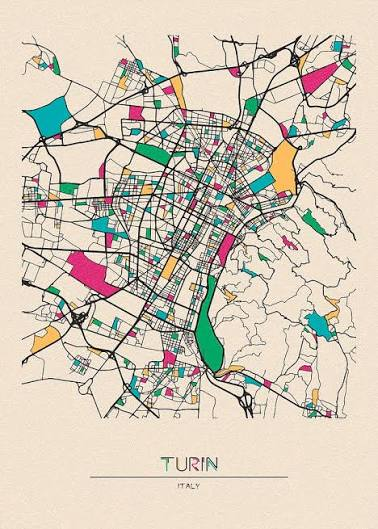
Ann Arbor
In a few days I will fly there without a return ticket. I will process myself through the vasculature that ferries human beings as economic hemoglobin, venously and arterially towards and away from the various hearts, peripheries, and capillary ends of the global Anglo-American imperium. I will wander around Turin for the second time in my life, now living a very different life from just a few months ago, simultaneously more certain and uncertain about the ground under my every decision. I am staying, out of pure coincidence, only a few blocks away from where Nietzsche lived and wrote his final three works before his madness. It is the anxiety of that spectral Turin horse which hangs over me, the feeling of my world vanishing rapidly into nothingness, with everything I’ve ever known be exposed as a fiction. I call into question how much the current moment is redeemed by the factual as opposed to the imagined past. I am curious in finding out if any intangible information about the horse remains secretly hidden in the city. It may be lying dormant in the stone tiling of the piazzas, the marble columns of the city square, and the mild yellowed walls of nearby villas. Perhaps the truth is waiting for the right number of footsteps and misdirected turns in an exact sequence of secret handshakes to reveal itself.
Chicago
The tickets were a few hundred dollars cheaper; most people fail to separate omens from realities. If anything, security is tighter on 9/11. I feel it’s strange that this event happened a quarter-century ago. It feels as if the decades stopped being counted after the year 2001. The ’80s were only 20 years ago. The Y2K era of the ’90s had been recent history. I am in O’Hare waiting for my second leg to Madrid, and everything is ordinary, including the numerous conversations I have with strangers. The old Boomer sitting across from me at Gate 38 is retiring next year. He lives on the border between Indiana and Michigan and travels internationally for business. We ate at the same restaurant in Hangzhou. A girl from rural Indiana next to me in line is going on her first study-abroad. An unbearably boring and overly sociable Seattle girl working at Amazon Marketing was seated with me on the plane. The airport resembles how I imagine Chicago, full of arcaded arches and bustling Irish shops.
Madrid
I landed at dawn having not slept. Madrid smiles at me, and the golden sun rubs against the non-Euclidean Castilian wooden roof of the airport, casting curved shadows as comforting silhouettes. I send a picture of this place to my friend who taught English in Madrid for a year. Then, Bryce says I should go to the Prado. He says it is the finest art museum in Europe and will change my life. I believe him, but the relatively short layover before my final flight to Turin makes this impossible. The pizza I had in O’Hare still sits in my stomach; it is the only food I’ve had so far. An elderly lady tries to seek my help with directions, but I struggle with Spanish. Occasionally, snippets of Chinese or German or Portuguese fly by. I am hungry, and I head towards the nearest restaurant that does not seem like a tourist trap.
Turin
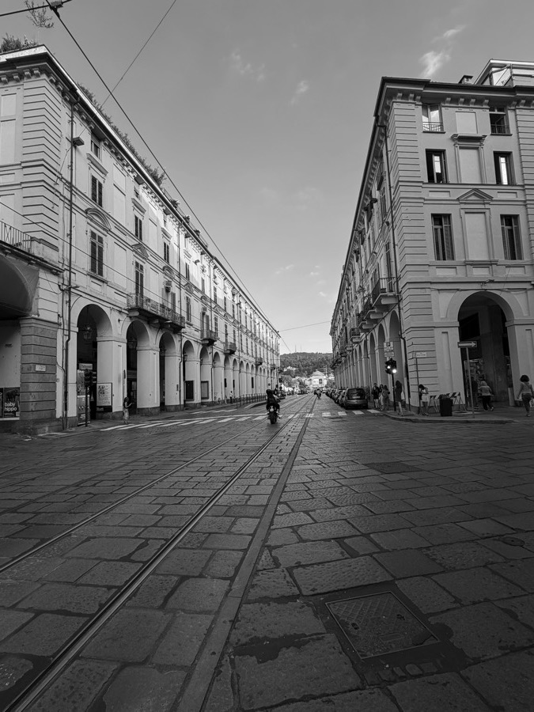
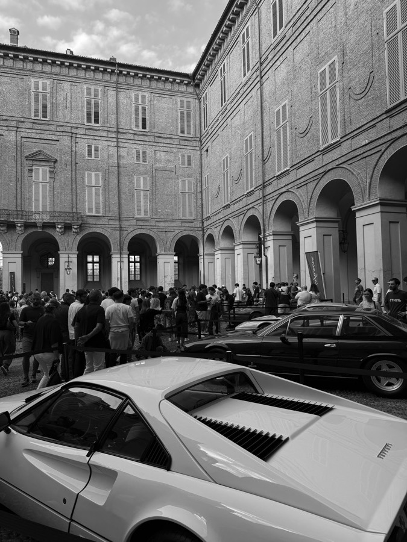
Many things occur simultaneously. Piedmontese meals are multi-course and simple. Whatever becomes of my paycheck this week will probably go towards the consumption of raw meats and aperitivi. The price differential of global trade tilts in my favor. Stone city. Brick city. Gridded city. French and German and Italian city. The gridded Roman roads are interspersed occasionally with 17th-century squares, Renaissance-era diagonal paths and Mussolini’s fascist marble. Occasionally, the blue sky slices through a street opening, exposing the Alpine landscape. As we take the path from the opera house through bookstores and arcades to the city square, Giulio and I stumble across the Torino car show. Streets were unusually overwhelmed with people from outside the city, with new money and exceptionally pretty Italian girls swarming the ancient streets on an otherwise quiet evening. Half of the car show ends up being Chinese EVs. My command of Italian is poor beyond basics, music terminology, and swearing, but ironically I understand the Chinese around me. Somehow, here the police are even worse than they are in America, only they probably won’t kill you. I am shown at the place I am staying a chest of famous swords, a commendation pendant from the Kaiser, a collection of curated art, the singed frame of a painting from Allied bombing, an ancient dagger deformed by the melting from the same bombing, and Ming vases that arrived here centuries before the Cultural Revolution.
Fenile near Turin
Ich sehe jetzt wieder die schönen blauen Alpen.
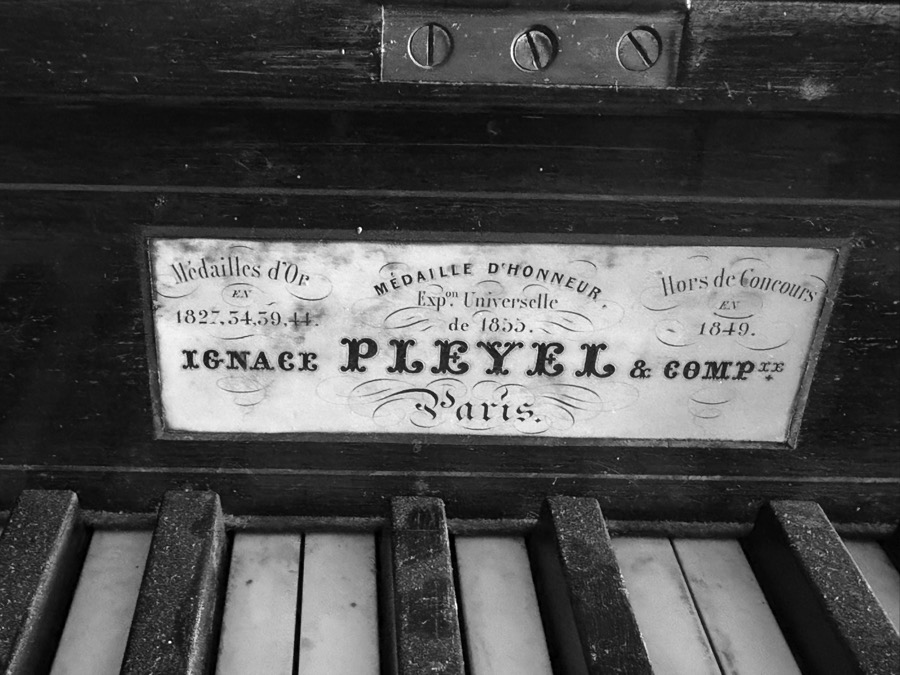
A great sadness overwhelms me when I enter the dark halls of the estate. I had been here two years prior, and the passage of time is filled with memories of a different period in my life. The piano, the beautiful Pleyel, remains untuned and unmaintained. The dog, now older, recognizes me and sickly runs up to greet me. She wears a cone now. Though I am now happier than I was then, this inevitable march of entropy haunts me. The library still smells of musk, except today there are a few more cobwebs, and the smell of a dead rat comes wafting from behind the piano.
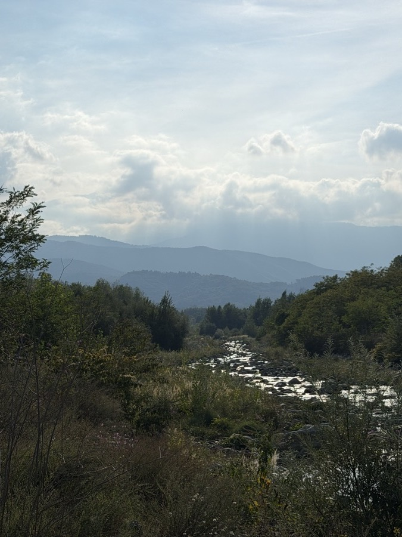
I sit in the late afternoon light looking at centuries-old copies of Dante and Boccaccio on the shelf. I strike notes on the worn Pleyel originally purchased at the first World’s Fair. A few more keys get stuck this time round. I open the first score I see. It is an old copy of Lohengrin once used by Toscanini’s assistant at La Scala.
Everything is quiet here. The grandmother greets me warmly. So does the father. Later, I walk in the Alpine stream, sun beaming on the river rocks. I look and see the blue Alps in the distance where Hannibal once passed through with his elephants. Giulio skips rocks, and I spend time washing my face in the cool spring water. For a moment, time stops and the ripples formed by the rocks resound again and again and again.
Hills of Turin near Midnight
One does not understand Marinetti or Futurism until they have been in a sports car at 200 kph around Torino.
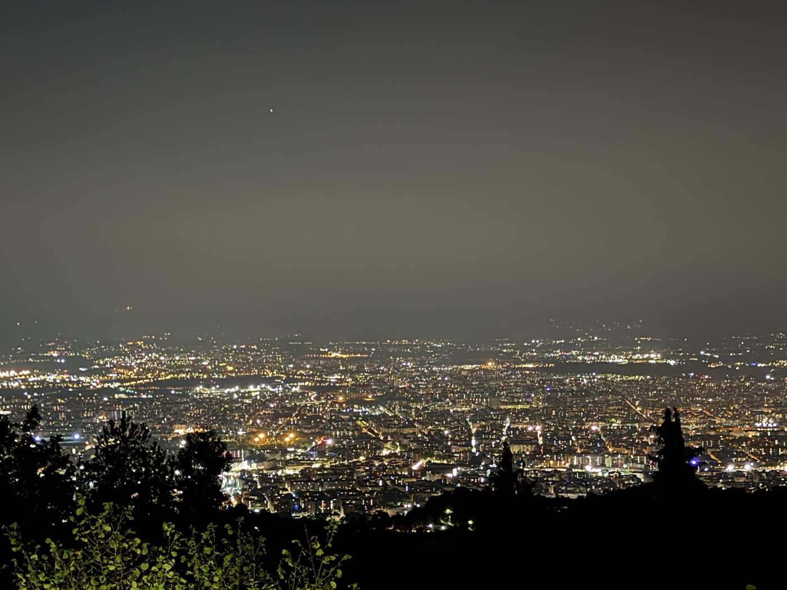
Turin near Noon
„Mutter, ich bin dumm.“
I wake up at 10:30 am to the sound of people in the square and a gentle warm breeze drifting through the dark green blinds that shield the blue sky against the modernist tomato-red of the bedroom. These days, I can barely sleep; it feels as if I contain too much, as if I am encumbered with an overwhelming need to walk in loops for miles around the city.
Every morning, I take two tramezzino squares followed by cups of freshly squeezed orange juice, coffee in some form, and still mineral water. I burn around 21 euros for breakfast, a cost for this food quality I am more than willing to pay.
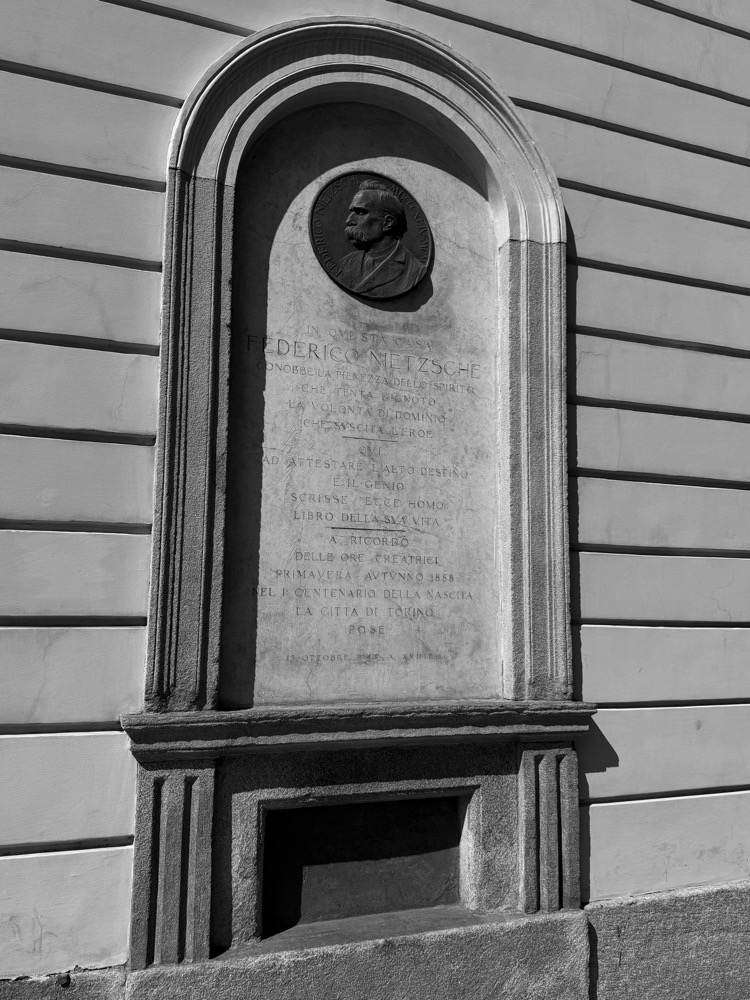
I walk down the straight streets of the city with occasional glimpses of the distant hills. Soon, I arrive at the old parliament building. I come across a stately marble and stone square, and I see the old apartment of Friedrich Nietzsche. It is here, surrounded by the orderliness of the city architecture, the vitality of the weather, and the liveliness of the people, that he wrote in full manic health. Just behind the parliamentary palace on a fateful morning in 1889, he lost his mind permanently.
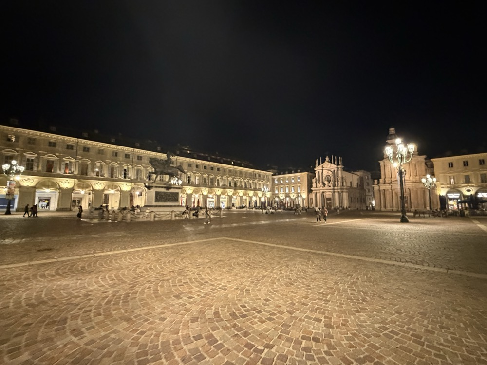
I feel as if I finally understand the esotericism of this situation. Pattern comes from Pater. Matrix from Mater. The womb originates creation but the pattern shapes it into form. Turin is gridded, patterned like a living matrix, a womb for the social activities of human life, but cities are paternalistic by nature. This city’s matrix, instead, offers the potentiality for patterning, the furthering of potential for a lifeworld and for many lifeworlds. Turin is a profoundly feminine city, a creative one. It drives paternity towards furthering the creative possibilities of maternity itself. Growing out of the city matrix, the ground tiles flow and grow and convey direction. The many shops settle and accumulate life as people find their way around life. Perhaps the true strangeness of the place is its androgynous fusion of complementary divine orders.
And maybe in his full health, Nietzsche saw the absurdity of his situation, recognizing that nothing comes truly from a will to power. Rather, even his splendid health, which he so readily describes in Ecce Homo, is nothing but a simple consequence of the divine pre-symbolic mother bringing forth fruit that no one may ever really call their own. Reinvention and overcoming oneself is just another pattern propagating itself in new ways into the infinite possibilities of creation. At the height of his health and spiritual freedom, he recognized there is in fact, no true ego and no true self-determination.
Turin
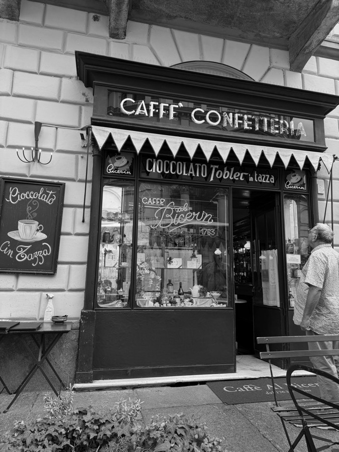
The protestant quarter and the synagogue are next to one another. I pass them by earlier on the walk by the river. I spent the day wandering the city and later stop at the Caffè Confetteria for a drink invented there centuries ago. The café is older than my own country by thirteen years. I feel as if my creative imagination is returning to me in the midst of this sensorial richness. I read poetry at my table and Giulio helps translate D’Annunzio and Dante. Later, I go to the church across the square and see the architectural skeletons of Roman rule in the lower stories. I remember that cities grow in height as they age. Sometimes, this leaves skeletons in the ground. Fascist buildings litter the classical and baroque establishments. This trauma is at least visible and resembles the empty modernist violence of the buildings in Il Conformista by Bertolucci.
Italian Alps along the Pellice River
After a slow morning in Turin, I arrive at the edge of Roman Italia and drive up into the ominous foreboding mountains in the distance. At first, they are nothing but a curiosity for the eyes and the water source of the river nearby. A few years before, I simply considered them the permanent, impassible, and irreproachable boundary of a demiurge’s Italian simulation. I didn’t even psychologically consider it a possibility that one could actually visit them.
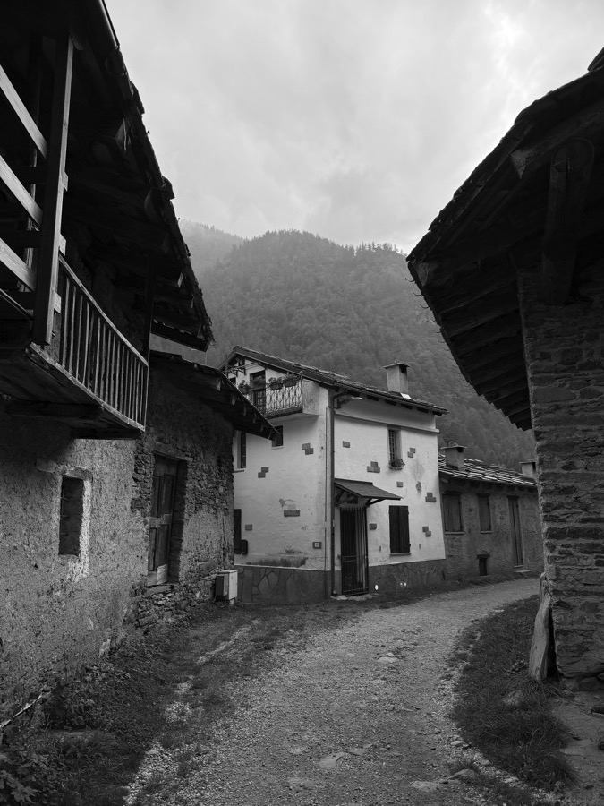
As we approach the mountains, the abject surreality of my situation grows. When I don’t think the paved roads can go any higher, I am surprised by yet another village, almost indistinguishable from the last, and exactly how it appeared in the Middle Ages, with cobblestones, wells, and moss. We ascend in jagged mountain paths in a Toyota sports car, taking fast, jerky, and sharp turns around narrow corners of many steep ledges. I grow almost slightly nauseous.
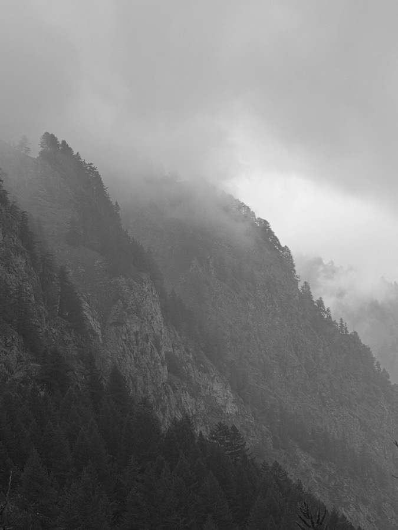
We park the car on a ledge by a small village and drink water from the fountain well. These misty titans soon stand right before my eyes. I gaze at these giants before me, they who have sat still since the creation of this continent, before the building of the pyramids, before human migration out of Africa, before man’s first utterance. I gasp for air, suddenly remembering my autonomous breathing ability. I start shedding tears, because I have never seen anything more horrifyingly beautiful in my entire life.
People talk and write about the Alps, but until you are there, you have no idea the earth could possibly look like this. The mountain is a stratified landscape from deciduous forest to pines to bare stone covered with ice at the peaks, heated against the golden afternoon sun. I witness myself exclaiming to Giulio while pointing at the range before us, “This is where Prometheus is chained to the rock! Every morning the eagle comes and eats his liver. Up there.” The plant growth overflows from each and every corner of the visual field, and the wild landscape is evidently in a constant protracted coordination with cobblestoned and pasturized human civilization. Worn and abandoned homes stand silently throughout the village alongside the few residents who still live there.
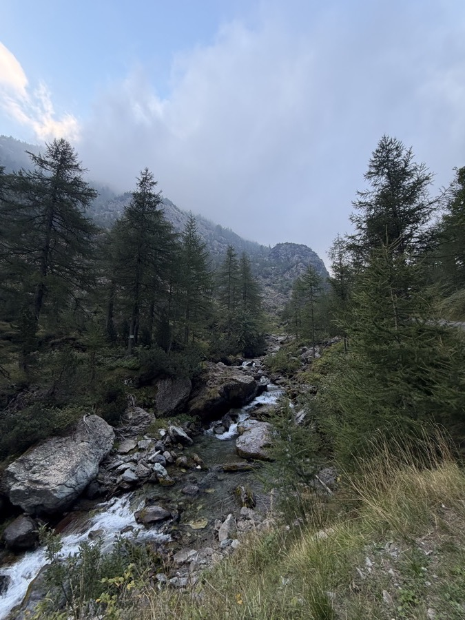
The climb begins at 2:30 or so. I forget how difficult hiking this high up is. My ears are slightly plugged from altitude, and I cannot take hold of my breath at first. My body feels worn after just twenty minutes. I am kilometers away from civilization and do not have any cellular connection. My gut aches with the food I ate for breakfast. As I continue on, the scenery disappears behind me and only the bare rock I stand on, the branches in front of me, and the immediate flowing water remain. Everything else strips down to a raw sensory experience, only immediately necessary for maintaining balance and making progress. I take every opportunity to splash myself with cold water running down the Pellice. I wash off the sweat and embrace every brief moment I have before I must continue on with the journey. I stop feeling my beating heart or my shortness of breath. I stop feeling fatigue altogether. The will leads the body. The promise of higher ground leads the will. I look at the path immediately ahead of me. For every hill I climb, I realize it is only a small part of a much larger incline. I become a human vector on a mountain fractal, annealing myself towards an infinite peak. In many such moments, I stop and take a look back at the sublime ridge formation and the impending disappearing tree line. The air cools by ten degrees. I continue and gradually feel completely alone, thoughtless and empty minded. I climb and the stone becomes me. I morph into the ancient trees, the shrubs, the trickling water which flows into the river. Every moving second becomes centuries of still-being, of becoming rock. As I ascend, I let go of myself.
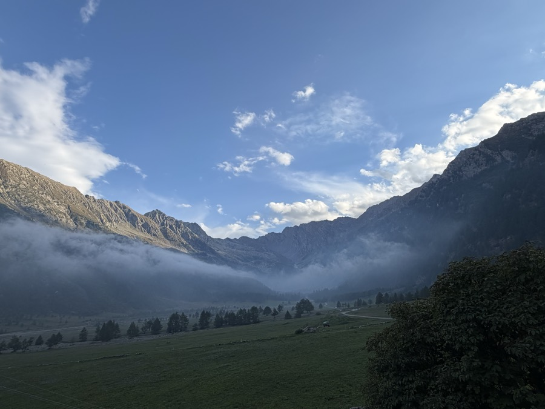
Finally, I reach the first terrace a few kilometers higher than my starting point. The air is 20 degrees cooler, and I see mountain pastures and dark green grass covered in dense misty haze. It’s an altiplane. I welcome this respite from Turin’s heat. At first, I hear the polyrhythm of cowbells against the metronomic step of my feet. White milk cows appear in the near distance, and large brown marmots run out and greet us from their holes onto small hills. Civilization returns. A rifugio lodge hangs in the distance and a small farm. These are the only two settlements in this mostly sparse valley. Pines hang in the distance of our flat plateau encircled by even more many-faced titans. Walking towards the outpost, Giulio and I arrive at a maintained lodge with a kitchen, and finally I hear voices of other people.
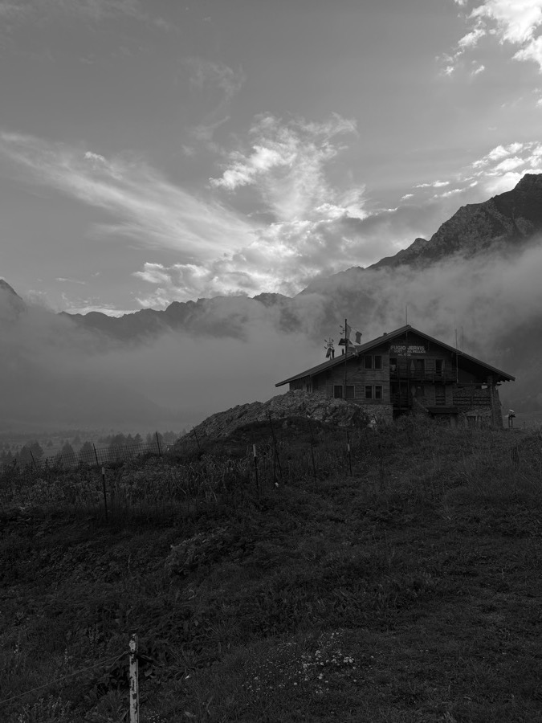
I’ve never been happier to see strangers. We almost briefly consider staying here for a night. We travel towards a farmhouse restaurant nearby, the only other one outside the lodge. The place is completely empty and it takes 4 minutes to ring up the owner. After purchasing cheese and mountain honey, we eat a slice of homemade pie and drink milk taken directly from the cows outside. The heated raw milk strikes me, bringing senses back to my face and body. I have forgotten what real milk tastes like, the cowness of it, the deep nourishment which coats the esophagus down to the intestine. We normally live our lives so incredibly detached from the source of our existence, and this is especially true of what we consume. I slump forward into a trance and shut my eyes.
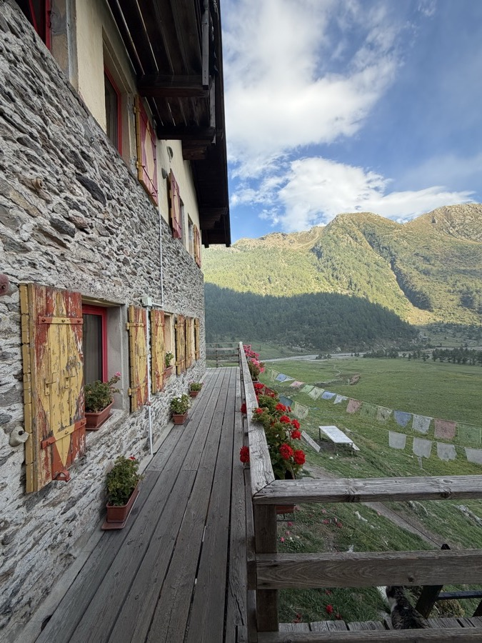
After a while, I drop by the rifugio alone. I converse lightly with a friendly, elderly Danish couple. The lodge is warmly lit. Some Italians are playing Radiohead covers on the piano. I help them tune their guitar. We speak and exchange words, taking comfort in the other’s simple presence. Then, as the sun clears the mist outside, casting the countenance divine unto stone unto grass and pine, they exit the common area onto the balcony. I sit alone with the upright piano inside, meditating through sound woven into brief musical gestures, emanating unconsciously through a silent conscious mind. My friend wants to descend before the air gets too cold since dusk is approaching.
Then we descend.
I feel an unbearable lightness of being.
I was held by something greater there. The natural landscape held me, planting strong rocks beneath my feet, soothing my soul with running cold water, clearing my sweat with alpine wind, and nurturing me through warm milk from her cows.
I have let her go.